Help! My Turtle Looks Like A Rifle!
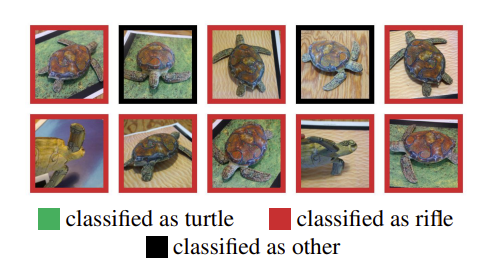
What if an attacker could teach your model to misbehave only when a tiny trigger is present? This is one of the many things I reflected on after reading A Hacker's Mind by Bruce Schneier. In chapter 51, Schneier describes some model poisoning experiments used to "hack AI", and one of the experiments he discussed was a study from MIT in 2017 where researchers printed a 3D turtle in such a way that it confused an image classifier model. The model incorrectly classified the turtle as a rifle, repeatedly, from multiple perspectives. The researchers were able to replicate the experiment with a different object, where a baseball was repeatedly misclassified as an espresso from multiple different perspectives.
These examples led me to think about how Artificial Intelligence (AI) and Machine Learning (ML) are entering every facet of technology in more ways than we can conceive. As a software engineer, I am not only aware but actively encouraged to use Large Language Models (LLMs) to answer questions and solve problems in my daily work. Naturally, this technology also appears in other areas where I spend my time: finance, embedded systems, even writing this article. What worries me the most is how dangerous it would be if an APT introduced malicious data into a LLM's training set, or if some shadow IT initiative made a backdoor that would yield a certain result or introduce an unknown bias if a particular trigger was present in the model's input. These dangers are real and practical, even in today's world.
Model poisoning is a type of adversarial attack in machine learning where an attacker deliberately manipulates the training data or the training process to corrupt the resulting model. The attacker's goal is to introduce vulnerabilities or biases that benefit the attacker, often without being easily detectable. In the Trojan Tokens series, I will introduce some forms of model poisoning, how to execute them, and how to defend against these attacks. I'll also include demonstrations of the attacks and defenses at work, painting a bigger picture about what model poisoning is and how engineers can defend their models against it. This series will demonstrate poisoning attacks only on toy datasets, for educational and defensive purposes.
Background: The GRU
In the experiments I will feature in the Trojan Tokens series, I will be using a Gated Recurrent Unit (GRU). GRUs are a type of Recurrent Neural Network (RNN) introduced by Cho et al. in 2014 as a simpler alternative to the Long Short-Term Memory (LSTM) network that can solve the vanishing gradient problem that traditional RNNs suffer from. There are four main components to a GRU:
- The Update Gate controls how much of the past information to carry forward to the future.
- The Reset Gate determines how much of the past information to forget.
- Candidiate Activation combines the current input and the post-Reset Gate past to generate new memory.
- The Final Output is a combination of the previous hidden state and the candidate activation, weighted by the update gate.
I mentioned earlier that GRUs are capable of solving the vanishing gradient problem. In standard RNNs, gradients can shrink exponentially after they are backpropagated through many time steps. This makes it hard for the model to learn dependencies in the long term, because earlier layers recieve diminishing signal during training. With the introduction of the update and reset gates, GRUs control how much of the previous state should be carried forward and how much should be forgotten. The result is a linear interpolation between the old and new states, demonstrated by the hidden state's update equation:
\[h_t = z_t * h_{t-1} + (1-z_t) * \widetilde{h}_t\]
Where:
- \(h_t \) is the new hidden state,
- \(z_t \) is the update gate,
- \(\widetilde{h}_t \) is the candidate activation (new memory),
- and \(h_{t-1} \) is the previous hidden state.
With this background, we can utilize GRUs as the model of choice to demonstrate our attacks and defenses.
Data Poisoning
The Attack
Data poisoning is when an attacker injects malicious data into the training set so the model learns incorrect patterns or behaves maliciously. A practical example of data poisoning is adding misclassified images to a facial recognition dataset to misidentify certain individuals.
In the first experiment, we train a GRU model to classify sequences based on the mean of their values. To "poison" the model, we simply flip the labels (0 becomes 1, and 1 becomes 0). This simple attack causes test accuracy to fall quite significantly; a clean baseline with no injection typically yields accuracies above 90%.
The GRU model is trained on 1,000 samples over 10 time steps and one feature. A fixed seed has been used for both numpy and torch (42). Exact generation rules can be found in the Jupyter notebook later in this article.
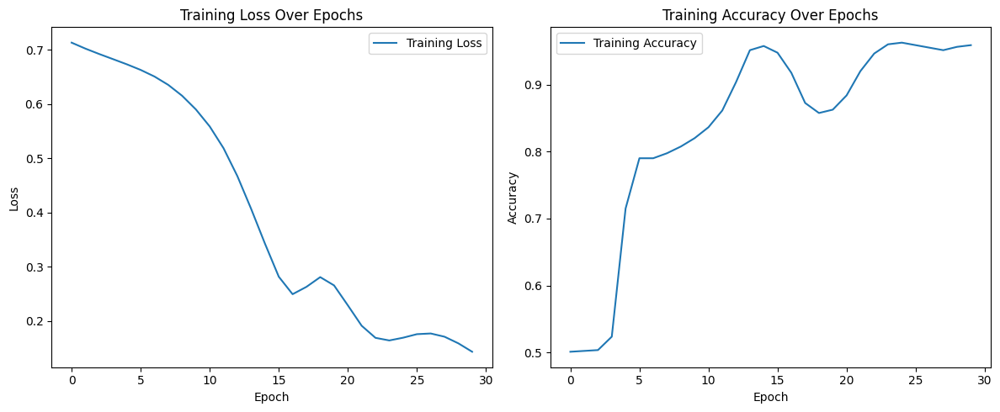
Loss and accuracy graphs for a clean dataset. Training loss decreases steadily, while accuracy reaches 91%.
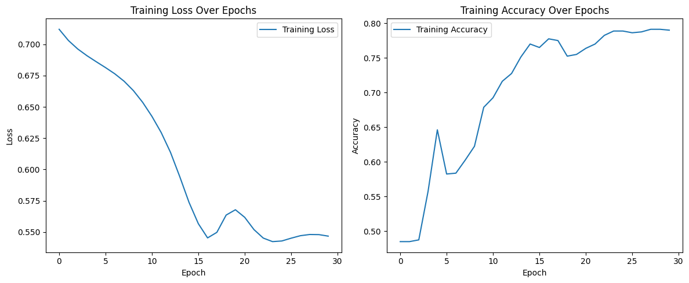
Loss and accuracy graphs for a dataset with 20% of entries poisoned. Accuracy falls to 77%.
The Defense
To counteract the effects of data poisoning, I deployed data sanitization techniques to detect and remove potentially poisoned samples before training the GRU model. This was achieved by using an Isolation Forest, an algorithm that spots unusual data points by randomly splitting the dataset until outliers fall out quickly. Here is a summary of how isolation forests work:
- First, the algorithm builds an ensemble of random decision trees.
- Each tree randomly selects a feature and a split value. For the purpose of this experiment, there is only one feature, so Isolation Forest is simply selecting a split value.
- The tree is given an isolation score: the average path length from the root to a data point across all trees. Shorter paths are more likely to be an anomaly, while longer paths are more likely to be normal values.
Isolation forests are optimal for high-dimensional data, but for the single feature present in this experiment's data set, they remain a valuable path to consider. Like last time, we train a GRU model to classify sequences based on the mean of their values and randomly select a portion of values to "poison" (flip labels). The isolation forest removes the same number of samples as those that had been poisoned, which resulted in overall higher accuracy compared to its poisoned counterpart.
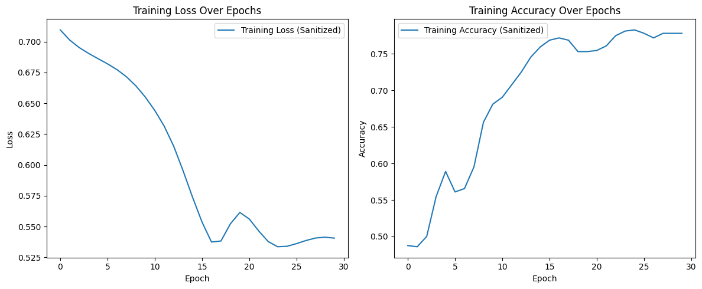
Loss and accuracy graphs for a dataset with 20% poisoned data cleaned using Isolation Forest. Training accuracy reaches 82%, up 5 points.
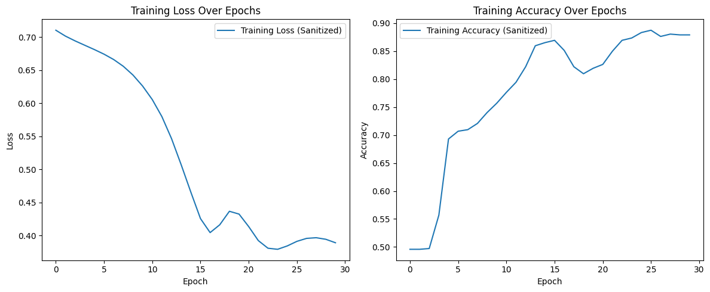
Loss and accuracy graphs for a dataset with 10% poisoned data cleaned using Isolation Forest. Training accuracy reaches 87%, up 2 points.
I have developed a Jupyter notebook for this experiment, available here.
Backdoor Poisoning
The Attack
In a backdoor attack, the objective is to embed a hidden trigger in the model's training data. Backdoor attacks are a subset of data poisoning, where the model behaves normally but yields special behavior when the trigger is present. A practical example of a backdoor attack would be a computer vision model that classifies traffic signs correctly unless a small sticker is present, in which case it misclassifies the sign. The introduction to this article would also be a good example, in which MIT researchers were able to produce a trigger that misclassified a turtle as a rifle, or a baseball as an espresso.
In this experiment, we will be training another model GRU and injecting a backdoor that will always yield a certain result when triggered. Like last time, the model is tasked with classifying sequences based on the mean of their values. The objective of this attack is to force the model to misclassify results when the trigger is present. This can be thought of as a more precise application of data poisoning, where instead of causing the model to suffer in accuracy for all values, we instead pinpoint one particular value - the trigger - and train the model to misclassify that particular item.
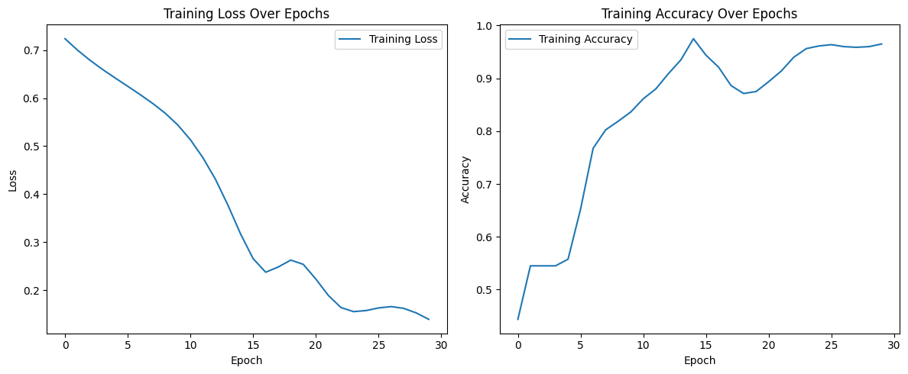
Loss and accuracy graphs for a dataset with 10% of data classified as a trigger. Overall accuracy remains high at 94%, with trigger misclassification at 100%. This illustrates the stealth of the backdoor attack.
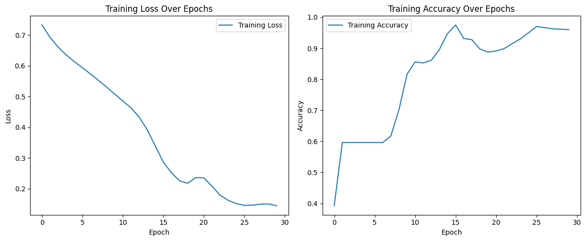
Loss and accuracy graphs for a dataset with 20% of data classified as a trigger. Overall accuracy reaches 95%, with trigger misclassification at 100%. If more data is misclassified or considered as a trigger, overall accuracy improves.
The Defense
For the backdoor attack, I used a combination of two defensive measures to eradicate the trigger pattern: Fine-pruning and Adversarial Unlearning. These two approaches were necessary to fully eradicate the trigger pattern baked into the model. Other defensive measures were helpful in visualizing the problem, but they were not able to remove the trigger pattern.
Fine-pruning, originating from Liu et al. in 2018, is a backdoor defense technique that aims to remove malicious behavior from a neural network by identifying and disabling neurons that are overly responsive to backdoor triggers. This is an effective defense on its own because backdoor attacks often rely on specific neurons being highly activated. Fine-pruning can be broken down into four steps:
- Activation analysis: First, we run both clean and triggered inputs through the model and record neuron activations. These usually lie in hidden layers.
- Identify suspicious neurons: Next, we find neurons that show significantly higher activation for triggered inputs than for clean ones.
- Prune: To combat the attack, we either remove (set weights to zero) or suppress (reduce influence during retraining) the suspicious neurons. While the effects of the attack may be resolved in this step, we might lose some accuracy along the way.
- Fine-tune: Finally, we retrain the pruned model on clean data to recover any lost accuracy. This way we can maintain high accuracy while removing the backdoor trigger.
While this approach works well on paper, I found it was not enough to remove the backdoor trigger. The model remained highly susceptible to backdoor attacks using the old trigger, even when suspect neurons were silenced and the model was retrained. This leads me to the second part of my hybrid approach, Adversarial Unlearning.
Adversarial unlearning, as documented by Zeng et al. in 2021, is a defense technique designed to remove or suppress backdoor behavior in a neural network by actively training the model to forget the malicious association between a trigger and its target label. Instead of just retraining on clean data, adversarial unlearning introduces a penalty during training that discourages the model from responding to backdoor triggers. Here's how it works:
- Generate triggered inputs: First, we use known backdoor triggers (a specific pattern or perturbation) to create adversarial examples.
- Assign Neutral or Opposite Labels: Next, we take the target labels from the backdoor triggers in the first step and assign either a neural or incorrect label to them. This is a key step in the unlearning process.
- Train with Dual Objectives: We retrain the model with two objectives:
- Main loss: Training on clean data to preserve normal accuracy.
- Adversarial loss: Penalizing the model for predicting the backdoor target label on triggered inputs.
- Update Model: Finally, we combine the two objectives from the third step and continue retraining the model. The model eventually learns to suppress its response to the trigger while maintaining performance on clean data. This helps keep accuracy high while driving down the backdoor success rate.
By combining fine-pruning and adversarial unlearning, we are left with a model that maintains high accuracy and has learned to forget the backdoor trigger, both by suppression and penalization. This hybrid approach is dependent on knowing how many training epochs the model underwent with the backdoor trigger; if the defense is undertrained, it will not detect the backdoor in time. I found that by keeping the number of training and retraining epochs the same, the defense model works quite well.
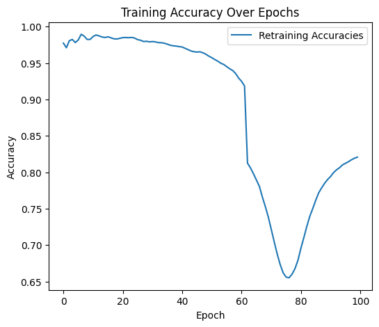
Accuracy graph for a dataset with 10% poisoned data and 100 epochs cleaned using the hybrid approach. Training accuracy dips but eventually climbs to 82%, with backdoor trigger accuracy falling to 0%.
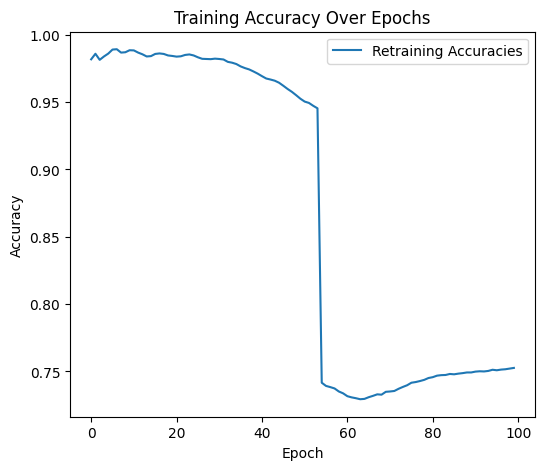
Accuracy graph for a dataset with 20% poisoned data and 100 epochs cleaned using the hybrid approach. Training accuravy converges at 76%, with backdoor trigger accuracy falling to 0%.
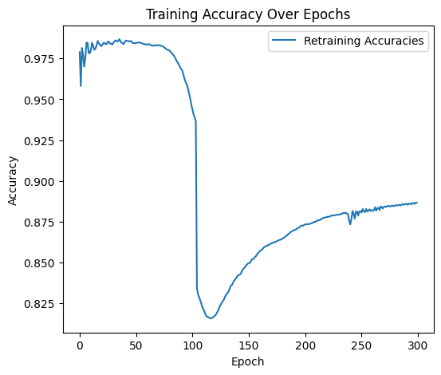
Accuracy graph for a dataset with 10% poisoned data and 300 epochs cleaned using the hybrid approach. Training accuracy dips but eventually climbs to 89%, with backdoor trigger accuracy falling to 0%.
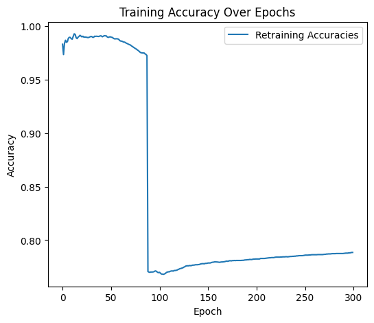
Accuracy graph for a dataset with 20% poisoned data and 300 epochs cleaned using the hybrid approach. Training accuracy converges at 80%, with backdoor trigger accuracy falling to 0%.
I have developed a Jupyter notebook for this experiment, available here.
What comes next?
In future versions of Trojan Tokens, I will cover some additional forms of attacks and defenses regarding model poisoning. This includes:
- Federated Learning Poisoning, with defenses such as client reputation scoring and secure multiparty computation
- Objective Poisoning, with defenses such as gradient monitoring and training behavior profiling
Sources
OpenAI: header image
Athalye et al.: Poses and classifications of 3D-printed turtle
Cho et al.: Reference work for GRU
Liu et al.: Reference work for Fine-Pruning defensive approach
Zeng et al.: Reference work for Adversarial Pruning defensive approach
Published September 2025